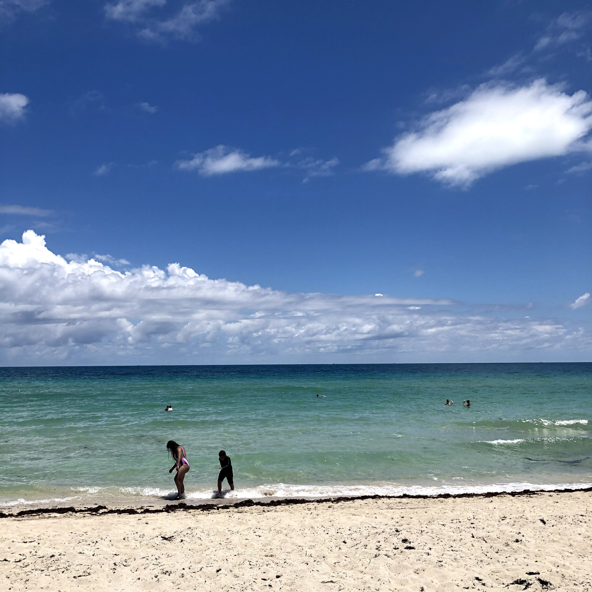
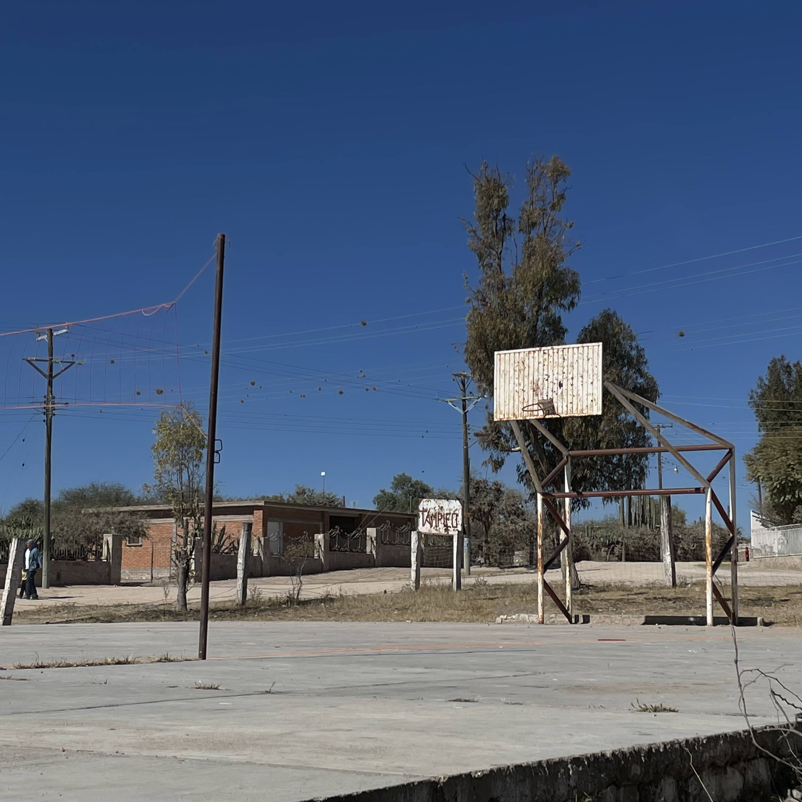

ABOUT ME
I love learning the steps it takes to make a website look excellent
My name is Jose Alan Juarez Trejo and I am 20 years old. I graduated high school in 2020 and enrolled in a university to study marketing. I quickly realized I was not ready to be in college, so I took an academic break. After working a couple of different jobs and meeting many new people, I met a friend who introduced me to the world of computer science. After I learned the basics of programming, I realized that I wanted to enroll back in school. I started taking classes in the summer of 2022 and plan on getting my Associates of Applied Science in Software Development. I want to thank Professor Herd for teaching me how to build a website, for being very helpful and understanding, and overall being a great professor. It has been a pleasure to have you as my professor.
Even though I am only halfway through the Web Desing Tools class, I have already learned so much about HTML5, FTP's, CSS, etc. The most important skill I have learned so far is how to use FileZilla, because without FileZilla my website would be just a bunch of files. Knowing how to organize your files and folders is very important in order for your website to look the way you want it to. One of my favorite skills I have learned is how to add images because of how simple it is. I enjoyed adding style, since it made my website more distinctive and personal. I could choose whatever color scheme, font, text size, etc. The possibilities are truly endless with CSS. I understand now why it is important to keep HTML and CSS apart, because it can get messy if they are both on the same page. Style sheets are so convinient and efficient, because any changes you make on the style sheet will apply to whatever pages have it linked. Being able to float elements adds a more clean look to the website and makes the contents of the box easier to digest since they are isolated. Despite the fact that implementing W3.CSS Framework was very time consuming, I still enjoyed it because it allowed me to be as creative as I wanted to be. Once I applied W3.CSS, I definitely felt more accomplished about my website because it finally looked like how I envisioned it at the start of the class, before I even knew what HTML was.
Places I Enjoy Visitng:
Guanajuato, GTO, MX
Miami, FL, US

Tampico, GTO, MX
